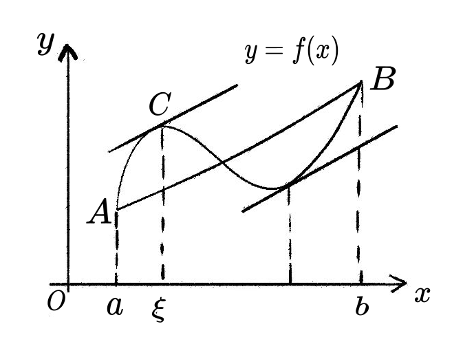
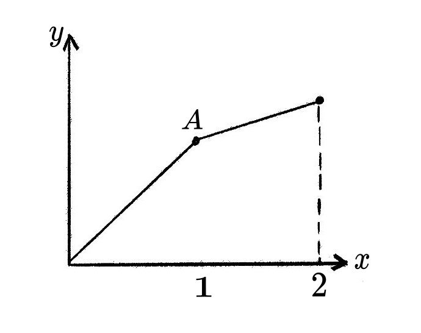
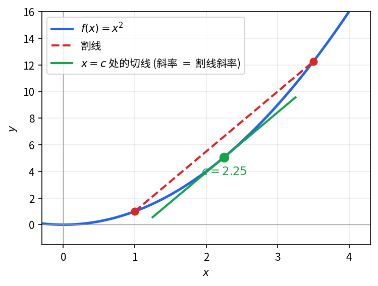
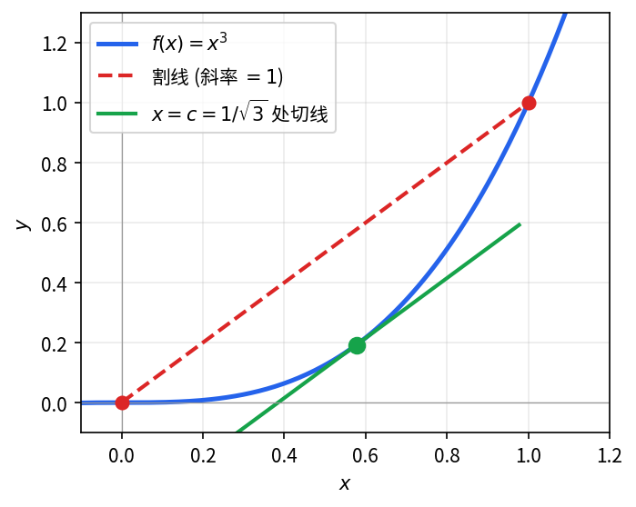
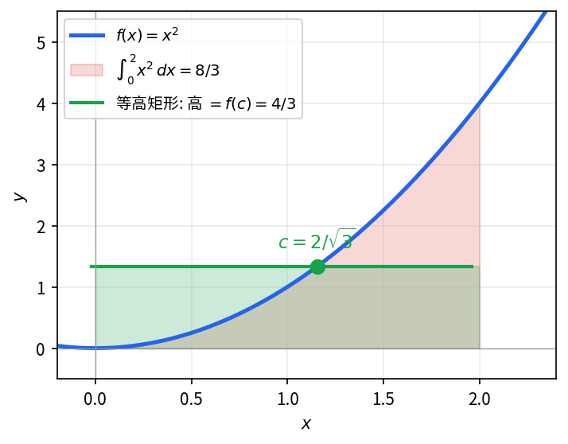
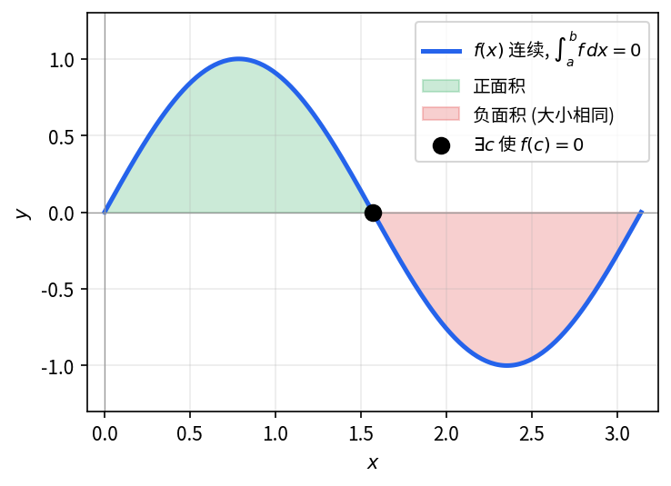
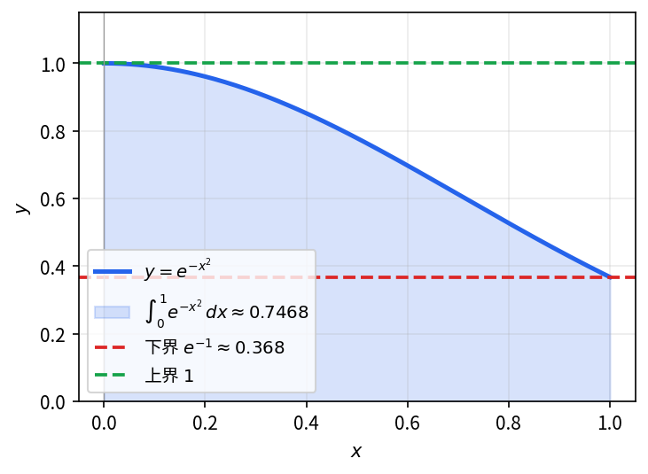
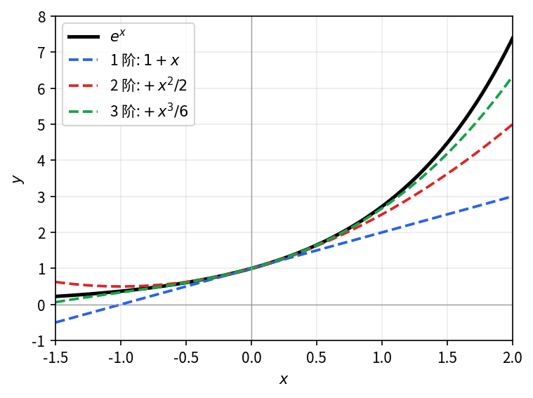
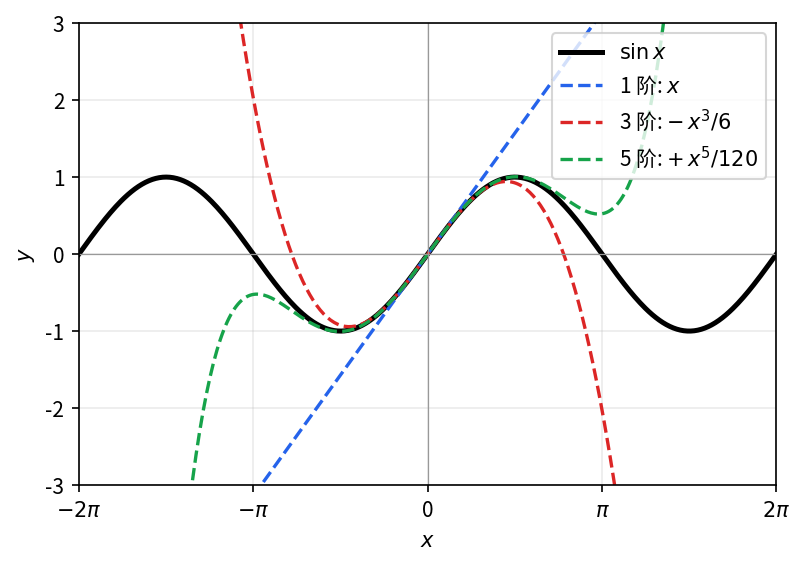
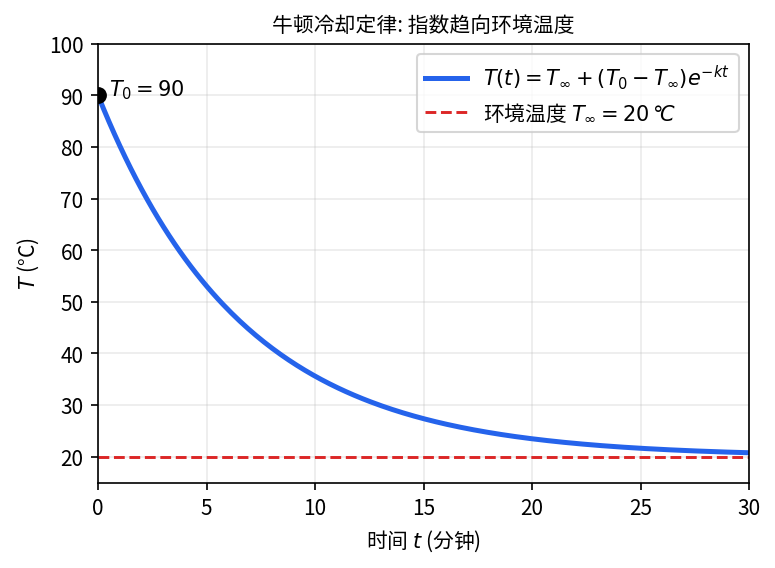

第一节 · 楔子
前三回，我们逐步学会了极限、导数与积分。这一回，暂且收起新的招式，把已经掌握的本领接起来：中值定理连接局部与整体，泰勒展开用多项式近似复杂函数，微分方程则让我们从变化规律出发，寻找未知的函数。
看清眼前的变化，才能进一步推演它的去向。这就是本回的主线。
第二节 · 中值定理
中值定理把一个区间上的整体变化与某一点的局部性质联系起来。拉格朗日中值定理讨论变化率，积分中值定理讨论累积量的平均值。
微分中值定理 (拉格朗日中值定理): 设 \displaystyle a<b，函数 \displaystyle f(x) 在闭区间 \displaystyle [a, b] 上连续, 并且在开区间 \displaystyle (a, b) 上可导. 那么, 存在一个点 \displaystyle c \in (a, b), 使得: f'(c) = \frac{f(b) - f(a)}{b - a}
该定理的几何意义是: 在曲线 \displaystyle y = f(x) 上, 至少存在一点 \displaystyle c, 它的切线斜率等于割线通过点 \displaystyle (a, f(a)) 和 \displaystyle (b, f(b)) 的斜率.

想象你开车从A城市到B城市, 总距离是 \displaystyle f(b)-f(a), 总时间是 \displaystyle b-a, 那么你的平均速度就是 \displaystyle\frac{f(b)-f(a)}{b-a}.
微分中值定理告诉我们: 在整个旅途中, 至少存在某一时刻, 你的瞬时速度 (导数) 恰好等于这个平均速度.
从几何角度看, 连接曲线两端点的割线斜率就是这个平均变化率, 而定理保证曲线上至少有一点, 该点的切线平行于这条割线.
中值定理保证这样的点存在，并不直接给出它的位置；应用时需要先核对闭区间上的连续性与开区间内的可导性。
不等式：\displaystyle |\sin x - \sin y| \leq |x - y|。
对 \displaystyle f(t) = \sin t 在以 \displaystyle x, y 为端点的区间上应用拉格朗日中值定理，利用 \displaystyle |\cos c| \leq 1。
对函数 \displaystyle f(t) = \sin t 在区间 \displaystyle [x, y]（或 \displaystyle [y, x]）上应用拉格朗日中值定理：存在 \displaystyle c 介于 \displaystyle x, y 之间，使得
\frac{\sin x - \sin y}{x - y} = \cos c
由于 \displaystyle |\cos c| \leq 1，故
\left|\frac{\sin x - \sin y}{x - y}\right| = |\cos c| \leq 1
即 \displaystyle |\sin x - \sin y| \leq |x - y|。
如果 \displaystyle f'(x) = 0 在某个区间上恒成立，则 \displaystyle f(x) 是常数函数。
任取区间上两点 \displaystyle a < b，对 \displaystyle f 在 \displaystyle [a, b] 上应用拉格朗日中值定理，利用 \displaystyle f'(c) = 0 得到 \displaystyle f(a) = f(b)。
任取区间上两点 \displaystyle a < b，由拉格朗日中值定理，存在 \displaystyle c \in (a, b) 使得
f(b) - f(a) = f'(c)(b - a) = 0 \cdot (b - a) = 0
因此 \displaystyle f(b) = f(a)。由于 \displaystyle a, b 是任意选取的，\displaystyle f 在整个区间上取值恒等，故 \displaystyle f(x) 是常数函数。
反例:
如下图, 该函数在 \displaystyle (0, 2) 上不可导, 不满足拉格朗日中值定理的前提条件, 所以不能应用该定理.

对于 \displaystyle f(x) = x^2，任取两点 \displaystyle x_1 < x_2，找出满足拉格朗日中值定理的中值点 \displaystyle c。
计算差商 \displaystyle \dfrac{f(x_2) - f(x_1)}{x_2 - x_1}，令其等于 \displaystyle f'(c) = 2c，解出 \displaystyle c。
\displaystyle f(x) = x^2 是多项式，在任意区间 \displaystyle [x_1, x_2] 上连续且可导，满足拉格朗日中值定理的条件。
计算差商：
\frac{f(x_2) - f(x_1)}{x_2 - x_1} = \frac{x_2^2 - x_1^2}{x_2 - x_1} = x_2 + x_1
令 \displaystyle f'(c) = 2c = x_2 + x_1，解得
c = \frac{x_1 + x_2}{2}
中值点 \displaystyle c 恰好为区间中点，满足定理要求。

对于 \displaystyle f(x) = x^3，取 \displaystyle x_1 = 0，\displaystyle x_2 = 1，找出满足拉格朗日中值定理的中值点 \displaystyle c。
计算 \displaystyle \dfrac{f(1) - f(0)}{1 - 0}，令其等于 \displaystyle f'(c) = 3c^2，解出 \displaystyle c \in (0, 1)。
\displaystyle f(x) = x^3 在 \displaystyle [0, 1] 上连续且可导，满足定理条件。
计算差商：
\frac{f(1) - f(0)}{1 - 0} = \frac{1 - 0}{1} = 1
令 \displaystyle f'(c) = 3c^2 = 1，解得
c = \frac{1}{\sqrt{3}} \approx 0.577
中值点 \displaystyle c = \dfrac{1}{\sqrt{3}} \in (0, 1)，满足定理要求。

回顾定积分的几何意义: 它表示曲边梯形的面积. 一个自然的问题是: 这个面积能否用某个”平均高度”乘以底边长度来表示?
直观理解: 对于连续函数 \displaystyle f(x) 在区间 \displaystyle [a,b] 上的定积分, 存在某个点 \displaystyle c \in [a,b], 使得以 \displaystyle f(c) 为高的矩形面积等于曲边梯形的面积.
设 \displaystyle a<b，函数 \displaystyle f(x) 在闭区间 \displaystyle [a, b] 上连续, 则存在一点 \displaystyle c \in [a, b], 使得 \int_a^b f(x) dx = f(c)(b - a)
数值 \displaystyle\frac{1}{b-a} \int_a^b f(x) dx 称为函数 \displaystyle f(x) 在区间 \displaystyle [a,b] 上的积分平均值.
几何意义: 由曲线 \displaystyle y = f(x), 直线 \displaystyle x=a, \displaystyle x=b 和 \displaystyle x 轴所围成的曲边梯形的面积, 等于以 \displaystyle f(c) 为高的矩形的面积.
由于 \displaystyle f(x) 在 \displaystyle [a, b] 上连续, 根据闭区间上连续函数的性质:
\displaystyle f(x) 在 \displaystyle [a, b] 上取得最小值 \displaystyle m 和最大值 \displaystyle M, 即 m \leq f(x) \leq M, \quad \forall x \in [a,b]
对不等式两边在 \displaystyle [a,b] 上积分: \int_a^b m dx \leq \int_a^b f(x) dx \leq \int_a^b M dx 即 m(b-a) \leq \int_a^b f(x) dx \leq M(b-a)
因此: m \leq \frac{1}{b-a} \int_a^b f(x) dx \leq M
根据连续函数的介值定理, 存在 \displaystyle c \in [a,b], 使得 f(c) = \frac{1}{b-a} \int_a^b f(x) dx
即: \int_a^b f(x) dx = f(c)(b-a)
证毕.
求函数 \displaystyle f(x) = x^2 在区间 \displaystyle [0, 2] 上满足积分中值定理的点 \displaystyle c。
先计算定积分 \displaystyle \int_0^2 x^2\,dx，再由积分中值定理 \displaystyle \int_a^b f\,dx = f(c)(b-a) 解出 \displaystyle c。
计算积分：
\int_0^2 x^2\,dx = \left[\frac{x^3}{3}\right]_0^2 = \frac{8}{3}
由积分中值定理，存在 \displaystyle c \in [0, 2] 使得
\frac{8}{3} = f(c)(2 - 0) = 2c^2
解得：
c^2 = \frac{4}{3}, \quad c = \frac{2}{\sqrt{3}} \approx 1.155

若 \displaystyle f(x) 在 \displaystyle [a, b]（\displaystyle a<b）上连续，且 \displaystyle\int_a^b f(x)\,dx = 0，则存在 \displaystyle c \in [a, b] 使得 \displaystyle f(c) = 0。
直接应用积分中值定理，得到 \displaystyle f(c)(b-a) = 0，再由 \displaystyle b - a \neq 0 得结论。
由积分中值定理，存在 \displaystyle c \in [a, b]，使得
\int_a^b f(x)\,dx = f(c)(b - a) = 0
由于 \displaystyle b - a \neq 0，故 \displaystyle f(c) = 0。

估计积分 \displaystyle\int_0^1 e^{-x^2}\,dx 的值范围。
在 \displaystyle [0, 1] 上确定 \displaystyle f(x) = e^{-x^2} 的最大值和最小值，用积分的比较性质（或积分中值定理）夹出积分范围。
函数 \displaystyle f(x) = e^{-x^2} 在 \displaystyle [0, 1] 上连续，且由于 \displaystyle 0 \leq x^2 \leq 1，有
e^{-1} \leq e^{-x^2} \leq 1
由积分中值定理，存在 \displaystyle c \in [0, 1]，使得
\int_0^1 e^{-x^2}\,dx = e^{-c^2}
由 \displaystyle e^{-1} \leq e^{-c^2} \leq 1，得
\frac{1}{e} \leq \int_0^1 e^{-x^2}\,dx \leq 1

若 \displaystyle f 连续，令 \displaystyle A(x)=\int_a^x f(t)\,dt，则 \displaystyle A'(x)=f(x)。对 \displaystyle A 应用拉格朗日中值定理，存在 \displaystyle c\in(a,b)，使得
\int_a^b f(t)\,dt=A(b)-A(a)=A'(c)(b-a)=f(c)(b-a).
因此，积分中值定理也可以看作拉格朗日中值定理对累积量函数的应用。这里假设 \displaystyle a<b。
第三节 · 化繁为简—泰勒展开
第二回，我们用切线在一点附近近似曲线。若希望看得更细，就把直线换成多项式：除了函数值与一阶导数，再让二阶、三阶导数也与原函数相同。
设 \displaystyle f 在 \displaystyle x_0 附近具有连续的前 \displaystyle n 阶导数。它在 \displaystyle x_0 处的 \displaystyle n 阶泰勒多项式为
T_n(x)=f(x_0)+f'(x_0)(x-x_0)+\frac{f''(x_0)}{2!}(x-x_0)^2+\cdots+\frac{f^{(n)}(x_0)}{n!}(x-x_0)^n.
在 \displaystyle x_0 附近，可以用 \displaystyle f(x)\approx T_n(x) 作近似。取 \displaystyle n=1，就是前面学过的线性近似。
令 \displaystyle T_n(x)=a_0+a_1(x-x_0)+\cdots+a_n(x-x_0)^n。要求它在 \displaystyle x_0 处与原函数的各阶导数相同，就得到
a_0=f(x_0),\quad a_1=f'(x_0),\quad 2!a_2=f''(x_0),\quad\ldots,\quad n!a_n=f^{(n)}(x_0).
因此，\displaystyle a_k=\frac{f^{(k)}(x_0)}{k!}。这些系数来自导数，而不是由“看起来相近”猜出来的。
常见函数在零点附近的近似
| 函数 | 多项式近似 |
|---|---|
| \displaystyle e^x | \displaystyle 1+x+\frac{x^2}{2!}+\frac{x^3}{3!} |
| \displaystyle\sin x | \displaystyle x-\frac{x^3}{3!}+\frac{x^5}{5!} |
| \displaystyle\cos x | \displaystyle1-\frac{x^2}{2!}+\frac{x^4}{4!} |
| \displaystyle\ln(1+x) | \displaystyle x-\frac{x^2}{2}+\frac{x^3}{3} |
| \displaystyle(1+x)^\alpha | \displaystyle1+\alpha x+\frac{\alpha(\alpha-1)}{2!}x^2+\frac{\alpha(\alpha-1)(\alpha-2)}{3!}x^3 |
这里讨论的是零点附近的近似，多项式与原函数之间使用近似号。保留更多项通常能改善附近的近似，但不能据此认为在任意位置都同样准确。
写出指数函数 \displaystyle e^x 在 \displaystyle x = 0 附近的一阶、二阶、三阶多项式近似，并说明各阶近似的形式规律。
泰勒展开系数为 \displaystyle a_n = \dfrac{f^{(n)}(0)}{n!}，利用 \displaystyle e^x 的各阶导数在 \displaystyle 0 处均为 \displaystyle 1，逐阶写出近似。
由于 \displaystyle f(x) = e^x 的各阶导数满足 \displaystyle f^{(n)}(0) = 1，系数 \displaystyle a_n = \dfrac{1}{n!}，得：
- 一阶近似：\displaystyle e^x \approx 1 + x
- 二阶近似：\displaystyle e^x \approx 1 + x + \dfrac{x^2}{2}
- 三阶近似：\displaystyle e^x \approx 1 + x + \dfrac{x^2}{2} + \dfrac{x^3}{6}
一般地，\displaystyle n 阶泰勒多项式为 \displaystyle\sum_{k=0}^n \frac{x^k}{k!}，每一项均为 \displaystyle x^k 的倍数，系数规律为 \displaystyle \dfrac{1}{k!}。

写出正弦函数 \displaystyle \sin x 在 \displaystyle x = 0 附近的一阶、三阶、五阶多项式近似，并说明为何只有奇数次项出现。
利用 \displaystyle \sin x 是奇函数，其泰勒展开只含奇数次幂；各阶导数 \displaystyle \sin^{(n)}(0) 仅当 \displaystyle n 为奇数时非零，且符号交替。
\displaystyle \sin x 的各阶导数在 \displaystyle 0 处满足 \displaystyle \sin^{(n)}(0) = 0（\displaystyle n 为偶数），交替为 \displaystyle \pm 1（\displaystyle n 为奇数）：
- 一阶近似：\displaystyle \sin x \approx x
- 三阶近似：\displaystyle \sin x \approx x - \dfrac{x^3}{6}
- 五阶近似：\displaystyle \sin x \approx x - \dfrac{x^3}{6} + \dfrac{x^5}{120}
只有奇数次项出现，这与 \displaystyle \sin x 是奇函数（\displaystyle \sin(-x) = -\sin(x)）一致：奇函数的泰勒展开只含奇次幂。

取 \displaystyle x=0.1，对指数函数使用不同次数的多项式，得到：
| 原函数值 | 一次近似 | 二次近似 | 三次近似 |
|---|---|---|---|
| \displaystyle e^{0.1}\approx1.105170918 | \displaystyle1.1 | \displaystyle1.105 | \displaystyle1.105166667 |
图像让我们看到局部的贴合，数值则让我们比较不同近似的效果。
利用 \displaystyle \sin x 的泰勒展开计算 \displaystyle \sin 1° 的近似值（结果保留七位小数）。
先将 \displaystyle 1° 换算为弧度，再代入 \displaystyle \sin x \approx x - \dfrac{x^3}{6}，保留足够精度的项即可。
令 \displaystyle x=\frac{\pi}{180}，代入三次多项式近似：
\sin1^\circ\approx\frac{\pi}{180}-\frac16\left(\frac{\pi}{180}\right)^3\approx0.0174524.
第四节 · 循变寻踪—微分方程
前面的问题，是给定函数，再计算它的导数。现在反过来：如果只知道一个量怎样变化，能否找出这个量随时间变化的函数？ 自由落体、速率方程和冷却过程，都是这样的例子。
含有未知函数及其导数的方程，称为微分方程。满足方程的函数，称为方程的解。例如，\displaystyle y'(t)=ky(t) 要求函数的变化率与它本身成正比。
方程通常会有一族解。若再给定某一时刻的函数值等信息，就得到初始条件，用来确定解中的常数。
已知加速度，寻找运动过程
沿竖直向下的方向取坐标，忽略空气阻力，自由落体满足 \displaystyle s''(t)=g。已知初始位置 \displaystyle s(0)=s_0 与初速度 \displaystyle s'(0)=v_0，连续积分两次：
v(t)=s'(t)=gt+C_1,\qquad s(t)=\frac12gt^2+C_1t+C_2.
代入初始条件，得到 \displaystyle C_1=v_0、\displaystyle C_2=s_0，所以
s(t)=s_0+v_0t+\frac12gt^2.
速率方程
速率方程 \displaystyle y'=ky 配上初始条件 \displaystyle y(0)=y_0，有解
y(t)=y_0e^{kt}.
对正的初始值，\displaystyle k>0 表示指数增长，\displaystyle k<0 表示指数衰减。将结果求导并代入初始条件，就能检验它是否正确。
当 \displaystyle y\ne0 时，将方程写成 \displaystyle\frac{dy}{y}=k\,dt，两边积分：
\ln|y|=kt+C,\qquad y=Ce^{kt}.
最后一个式子中的 \displaystyle C 是重新记号后的任意非零常数。另有解 \displaystyle y\equiv0，对应 \displaystyle C=0。代入 \displaystyle y(0)=y_0，便得到 \displaystyle C=y_0。
求满足 \displaystyle y'=2y、\displaystyle y(0)=3 的函数 \displaystyle y(t)。
先写出速率方程的解，再代入初始条件。
y(t)=Ce^{2t},\qquad C=y(0)=3. 因此 \displaystyle y(t)=3e^{2t}。
某物质的剩余量满足 \displaystyle y'=-ky，其中 \displaystyle k>0，且 \displaystyle y(0)=y_0>0。求剩余量减为初始值一半所需的时间。
先写出 \displaystyle y(t)，再解 \displaystyle y(t)=\frac{y_0}{2}。
由 \displaystyle y(t)=y_0e^{-kt}，有 \displaystyle e^{-kt}=\frac12，所以 t=\frac{\ln2}{k}.
牛顿冷却定律
若环境温度恒为 \displaystyle T_{\mathrm{env}}，牛顿冷却模型假设温度的变化率与温差成正比：\displaystyle T'=-k(T-T_{\mathrm{env}})，其中 \displaystyle k>0。它讨论的是温差按比例衰减，而不是每分钟降低同样多的温度。
设 \displaystyle T'=-k(T-T_{\mathrm{env}})，其中 \displaystyle k>0，环境温度 \displaystyle T_{\mathrm{env}} 为常数，\displaystyle T(0)=T_0。求 \displaystyle T(t)。
令 \displaystyle u=T-T_{\mathrm{env}}，把问题化为速率方程。
换未知函数：令 \displaystyle u(t)=T(t)-T_{\mathrm{env}}。由于环境温度不变，\displaystyle u'=T'，所以 \displaystyle u'=-ku。初始条件变为 \displaystyle u(0)=T_0-T_{\mathrm{env}}。
求解并换回温度：\displaystyle u(t)=(T_0-T_{\mathrm{env}})e^{-kt}，因此
T(t)=T_{\mathrm{env}}+(T_0-T_{\mathrm{env}})e^{-kt}.

微分方程把导数与积分连成了一个过程：先用导数写出变化规律，再用积分寻找满足规律的函数，最后用初始条件确定具体的解。
第五节 · 回望来路
这一回，我们把导数与积分的本领用在了三个方向上：中值定理连接局部与整体，泰勒展开用简单函数近似复杂函数，微分方程从变化规律寻找未知函数。
同样是“化未知为已知”，每条路都有自己的着力点。使用中值定理，要核对连续与可导的条件；使用泰勒多项式，要认清展开点与所研究的位置；建立微分方程，要说明量之间的关系，并用初始条件确定具体的解。

所谓推演天机，并非凭空猜测未来，而是把变化写成关系，把关系交给数学，再检验所得结论是否符合问题本身。